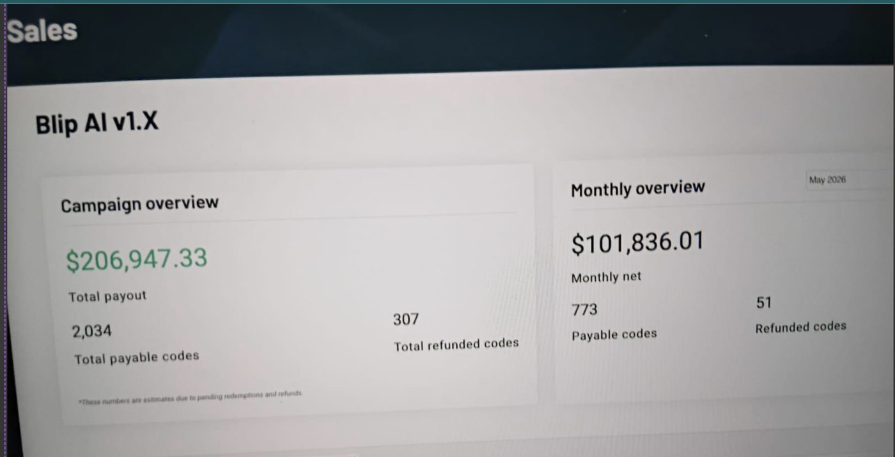
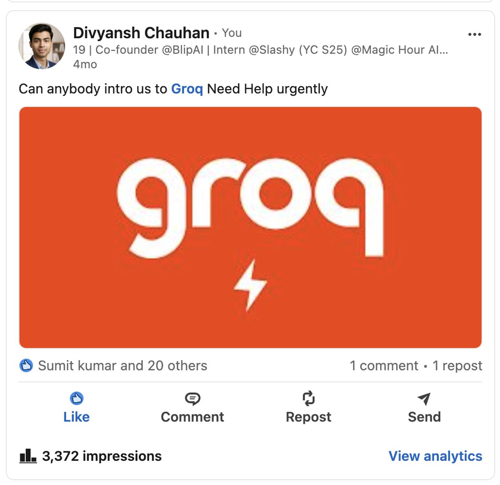

← index
We nearly touched $207k
then blip was attacked for three days, our groq account was banned, and the refunds took a third of the revenue with them. this is the part i'd rather not put on a portfolio, which is exactly why it's here.
What blip was
a voice-to-text tool — a cheaper alternative to wispr flow. i founded it and ran it on my own: product, pricing, onboarding, funnel instrumentation, and all of the distribution. it sold through a lifetime-deal campaign, which is why the dashboard below counts codes rather than subscriptions. 10,000+ users, and around 2m organic views across reddit, x and instagram got them there. no ad budget, no audience when i started.

What happened
somebody started hammering the product with requests. not a clever exploit — volume. every one of those requests hit our inference provider on our key, and the bill and the rate profile went somewhere neither i nor the provider had any reason to expect.
two things broke at once, and the second is the one that actually hurt:
- our groq account was banned. not throttled, not rate-limited — banned. the traffic pattern looked like abuse because it was abuse, just not ours, and the ban landed on us rather than on whoever sent it. without inference, blip does nothing at all. it's a dictation app with no transcription.
- the product stayed down for three days. and a lifetime-deal customer who bought last week and finds a dead app this week does not wait politely. they refund. 307 of them did.
that's the whole mechanism. an attacker spent nothing, i lost roughly a third of the revenue, and the refunds are permanent in a way the outage wasn't.
What i did about it
badly, at first. i spent about a day trying to solve it alone — reading docs, filing support tickets into a queue, refreshing a dashboard. what i should have done on hour one is what i eventually did on day two: say out loud, in public, that i was stuck and needed a specific thing.

it worked, but not the way i'd asked. nobody introduced me to groq, and the ban was never lifted. what actually happened is that harsh, slashy's co-founder, saw the post and handed me his own groq account — so blip had inference again, and the product came back up on somebody else's key.
the useful detail there isn't "networking works." it's that the thing which saved it wasn't the intro i'd asked 3,372 strangers for. it was the co-founder of the company where i'm the first hire — someone i already worked with every day — who read a post i almost didn't publish because it was embarrassing, and gave me something of his own. i had been optimising for reach. the fix came from a relationship.
What i actually learned
- an api key is a single point of failure and i treated it like a config value. no rate limiting of my own, no per-user quota, no spend alarm, no fallback provider. every one of those is a few hours of work i hadn't done, and any one of them would have turned this from an outage into an inconvenience.
- your provider's abuse detection cannot tell your traffic from an attacker's. it protects them, not you, it acts without asking, and it bans the account it can see — which is yours. if you're a single-provider product, you are one anomalous day from being switched off with no appeal that runs faster than your refund window.
- lifetime deals convert downtime into permanent losses. a subscriber who has a bad week churns next month and might come back. an ltd buyer inside a refund window just leaves, and takes the revenue with them. i priced for cash up front without pricing in the fragility that comes with it.
- the day i waited was more expensive than the help was hard to ask for. that's the one i think about most. i had the reach to fix it on day one and didn't use it, because posting "i need help" felt worse than losing money. it wasn't.
i still think blip was a good product. it made real money from people who had never heard of me, in a category with a well-funded incumbent. but i'd built it as though nothing adversarial would ever point at it, and the first thing that did took a third of the revenue in seventy-two hours.
the reason this page exists: the numbers on the front of a portfolio are usually the ones that survived. this is the one that didn't, and it taught me more than the rest of it.